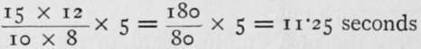
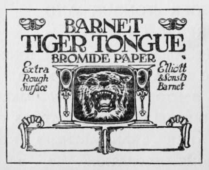

The Negative. Continued
Description
This section is from the book "The Barnet Book Of Photography", by Herts Barnet. Also available from Amazon: The Barnet Book Of Photography.
The Negative. Continued
When a soluble bromide, such as potassium bromide, is added to a developing solution, either before or after the first appearance of the image, by a rather complex chemical reaction, the parts of the emulsion least affected by light are more difficult, or at least require more time, to reduce to the metallic state, the bromide at the same time having a preservative action from decomposition over the whole of the emulsion. If an excessively over-exposed print were developed without the presence of a bromide, or other restraining element, the image would consist of a mixture of decomposed and reduced silver, presenting a muddy, flat, and horrible appearance.
By the addition of a bromide, however, the development of the print may be governed by the depth of tone of the shadows, or parts most affected by light, leaving the other parts to the will of the bromide—as indeed to a great extent we must, since the effect varies nearly in direct proportion with the quantity added. Some of my readers may doubt my statements as to the hopelessness of underexposure ; believe me, such methods as warming the paper, etc, are of little use, only tending to fog the emulsion.
Now, if the foregoing brief outline of the chemical and physical conditions pertaining to exposure and development be borne in mind during the manipulations of the process, I am confident that the worker will have every chance of being successful. Bromide paper, although of delicate constitution, will stand an enormous amount of chemical treatment if properly handled. It is quite a false idea that it easily takes on stains and markings. Keep [your solutions and fingers clean and you keep your paper clean.
Its keeping quality is beautiful, but it must be kept in a dry room. I recently used an opened packet five years old, which had been put away in a drawer in my study among some letters, and it was as good as a batch of paper which had been specially made for me that month by Messrs. Elliott & Sons for some experimental work I was at the time carrying out.
The use of a drawing-board, or similar apparatus, as a screen for focussing on, and for pinning up the bromide paper ready for exposure, is, in my opinion, far preferable to enclosing it between pieces of ground and plate glass, as with this method the amplification is bound to be limited ; it needs but a little care to remove the bulges which sometimes appear when pinning the paper on the screen.
To print, or expose, either by daylight or artificial light, the negative is placed in the carrier upside down, and with the glass side towards the source of illumination, and focussing effected by racking the front of the camera in and out in the usual manner. The screen should either be painted white, or covered with white paper, and must be perfectly rigid. If the camera or lantern be movable it is a good plan to fix the screen against a wall.
Should the lens require stopping down in order to secure greater definition, the law relating to the ratio of exposure to the "/" values is absolute in this case; therefore if an exposure of one second be required with /8, then /11 will require two seconds, /16 four seconds, and so on. The use of a piece of yellow glass in the place of the lens cap is an absolute necessity. It is hardly necessary to say that the greater the amplification, the farther away will be the lantern from the screen, with a corresponding increase in the exposure. Curiously enough, however, I have found out, and other workers have corroborated, that the law of the intensity of a light does not hold in this case. But there is a very practical method of estimating the increase in the exposure by a simple calculation, as follows. Say the exposure for a 10x8 was 5 seconds, and it is required to know the time for a 15x12. The area in square inches of the greater enlargement (15x12) divided by the area of the smaller (10 x 8) multiplied by the time for the smaller, gives the required time for the larger print.
Example
This must on no account be taken as a fixed law, but simply as an excellent guide for the trial exposures.
Trial Exposure
In no case of a first print must this preliminary operation be omitted. For prints up to 12 x 10 it is simple, but for larger work must be somewhat elaborated, if only for the sake of economy. Focus your image, and with yellow glass in front of the lens, place a small piece of bromide paper over a typical part of the image on the screen, preferably containing both high light and shadow. Expose by removing the yellow glass and counting by means of a watch or similar instrument. This trial piece must be developed with a developer of normal strength, and developed as far as ever it will go. For larger work it is advisable to use, say three pieces of paper for the trial exposure. First, a piece is placed over the densest part of the image, a triple exposure is then made by covering the paper with a piece of card, and giving three exposures of equal duration by uncovering a third part of the paper at definite intervals. Thus, if one-third received 5 seconds, two-thirds will receive 10 seconds, and the last 15 seconds. By this means we can find the exposure necessary for the densest part of the negative to just print through.
The other two pieces of trial paper are now placed on the lightest part of the image, and an intermediate, or half tone, respectively, and the determined exposure given. From the results obtained we are able to judge with considerable accuracy the length of the scale of gradation, and the depth of tone it is possible to acquire with that quality of negative and light.
The exposure of the large sheet may now be proceeded with.
If the greatest possible definition be required, the paper should first be thoroughly wetted, also the surface of the enlarging-screen, and the paper, after being allowed to drain, placed in the position it is to occupy on the screen. A perfectly clean wet sponge which is free from grit may be used to smooth out any bulges or creases in the paper. Needless to say the paper will be in a very greasy and slippery condition, and must be handled with great care. When wet, it stretches considerably, it is therefore advisable to soak it for some three or four minutes. It must not be pinned to the screen, but allowed to support itself by its own suction; should the exposure exceed fifteen minutes it may be sponged over at intervals. On drying, the paper will contract to its original state, thereby reducing to a corresponding degree any diffusion in the image. I have found this very beneficial in architectural subjects.
After exposure, either in the wet or dry state, the print is immersed in water, and to do this so as to ensure the complete absence of air-bells, the following method" is most efficient. Fill the dish nearly full with water, and taking one end of the print, place it under, then slowly pull the rest of it through and under. Allow it to soak for at least three minutes, more if it be thick paper, then pour off the water and, standing the dish on end, allow to drain completely. These manipulations are absolutely necessary for facility in working.
Tiger Tongue Bromide Paper
Continue to:
- prev: The Negative
- Table of Contents
- next: Weak Development
Tags
paper, print, negative, exposure, lens, development, camera, focus